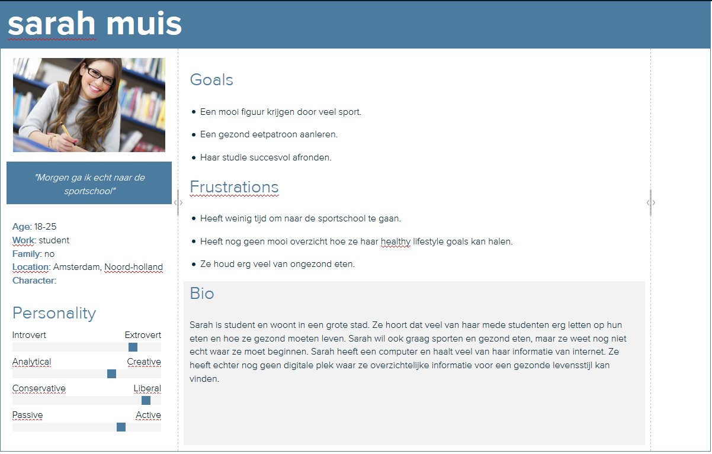
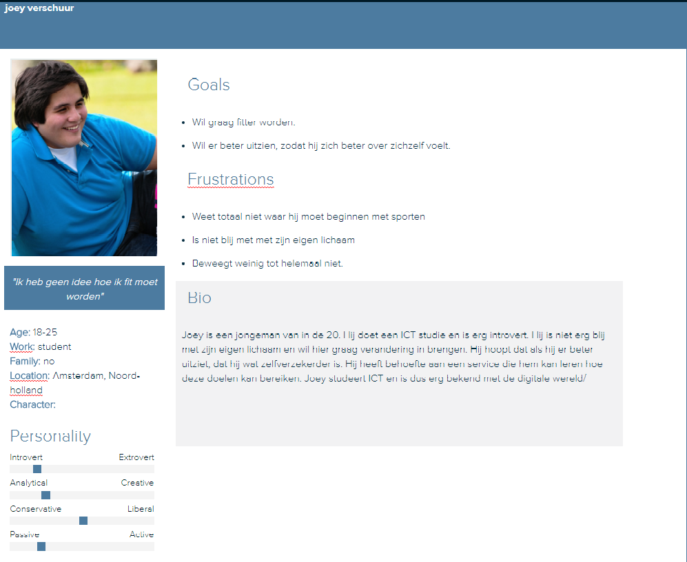

Voor deze opracht moesten we een nieuw product verzinnen. Dit product moest ervoor zorgen dat mensen gezonder gingen leven. We moesten dit product uitwerken aan de hand van een customer journey en een aantal persona's. Deze opdracht was in inleiding voor customer journeys en persona's maken. Dit zijn twee tools die ik voor veel ander oprachten heb gebruikt, waaronder de eindopdracht. Ik had in het begin wel moeite met het nut van deze tools inzien, maar nu ik echt iets moet ontwerpen voor de eindopdracht snap ik dat ze echt heel erg bruikbaar zijn.
